来源：PDF 学习笔记 · 共 25 页 · 提取文本 16988 字 · 提取插图 35 张
计算机基础知识学习笔记
💡 学而不思则罔，思而不学则殆。 —— 孔子
👉 新年充电 推荐书单
学习提纲思维导图
在左侧 “+” 菜单点击“思维导图”创建你自己的读书思维笔记
1. 基本概念
1.1 BIOS（Basic Input/Output System）
1.1.1 BIOS在主板上的位置
BIOS（基本输入输出系统）是固化在主板上一块 Flash ROM 芯片里的固件程序——它是计算机上电后第一个运行的软件，在操作
系统接管之前负责"点亮"整个系统。
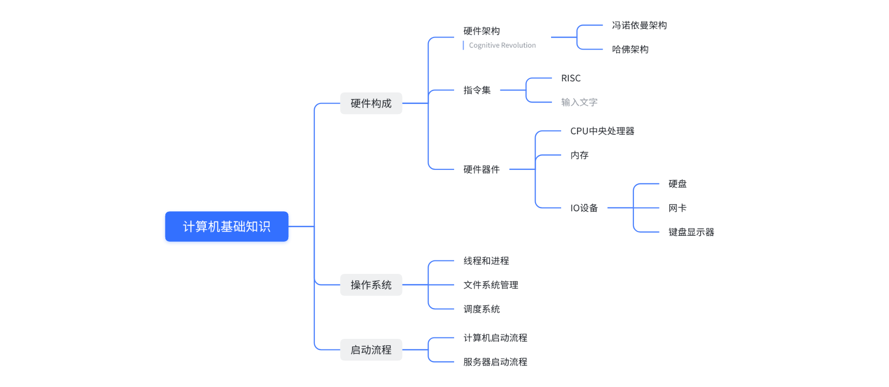
如上图所示，BIOS 芯片独立于 CPU 和 RAM，焊在主板上。按下电源键的瞬间，CPU 内部的程序计数器（PC）被硬件硬连线到一
个固定地址（x86 通常是 0xFFFFFFF0 ），这个地址恰好映射到 BIOS 芯片的顶部区域——于是 CPU 的第一条指令就是从 BIOS
里取出来的。
1.1.2 BIOS上电后的完整启动流程
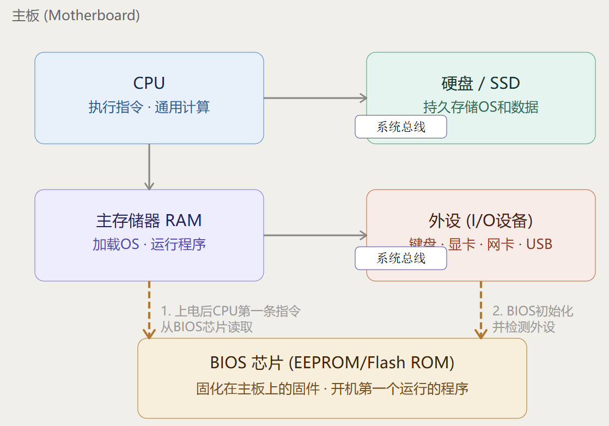
上图是 BIOS 从上电到操作系统接管前的完整流程，每一步的细节如下：
1. 第 1 步 — BIOS 自举：电源稳定后发出 POWER GOOD 信号，CPU 硬件复位，程序计数器被设为 0xFFFFFFF0 （这是 x86 的
约定地址）。这个地址映射到 BIOS Flash ROM 的顶部，CPU 就从这里开始执行。BIOS 首先初始化自己的内部状态，准备后续
工作。
2. 第 2 步 — POST 开机自检：这是 BIOS 最核心的功能之一。POST 会逐一检查：CPU 是否正常、内存条是否插好且容量正确、
显卡能否初始化（你能看到屏幕亮起就是这个阶段）、键盘是否连接、存储控制器是否响应。如果 POST 发现致命错误（比如内
存损坏），BIOS 会用**蜂鸣器发出不同的蜂鸣码（Beep Code）**来告诉你哪里出了问题——因为此时屏幕可能还没点亮。
3. 第 3 步 — 硬件初始化：POST 通过后，BIOS 开始正式配置硬件。它会扫描所有 PCI/PCIe 设备，为每个设备分配中断号（IRQ）
和 I/O 端口地址，配置内存映射。同时设置 RAM 的时序参数（从 SPD 芯片读取），激活 CPU 的高级特性（如缓存、虚拟化支
持）。
4. 第 4 步 — 查找启动设备：BIOS 按照 CMOS 中保存的启动顺序（Boot Order），依次检查每个设备——硬盘、U盘、光驱、网
络。找到第一个有有效引导记录的设备后，就选定它作为启动源
5. 第 5 步 — 读取引导扇区：BIOS 将启动设备的第一个扇区（512 字节，称为 MBR — Master Boot Record）加载到内存地址
0x7C00 ，然后 CPU 跳转到这个地址开始执行。这 512 字节里存放的是**引导加载程序（Bootloader）**的第一阶段代码。
6. 第 6 步 — 移交控制权：MBR 中的 Bootloader 接管后，它会加载更完整的第二阶段引导程序（如 GRUB、Windows Boot
Manager），最终把操作系统内核加载到内存并跳转执行。至此，BIOS 的使命完成，控制权完全交给操作系统。
1.1.3 BIOS主要功能介绍
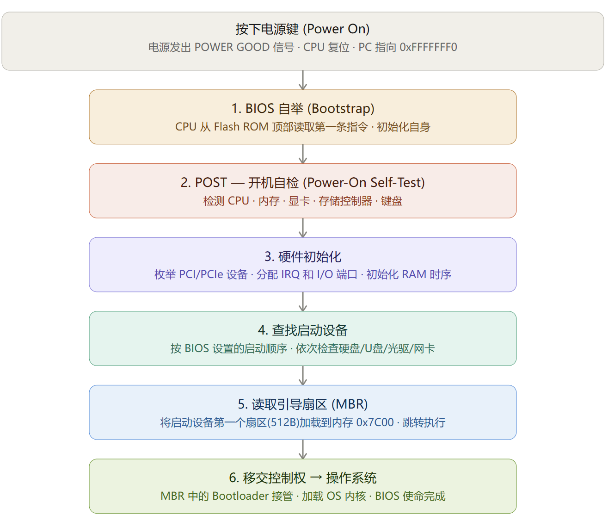
BIOS 的四大功能模块详细解读：
1. POST 开机自检：上电后 BIOS 做的第一件"正经事"。它会按固定顺序检测硬件——先测 CPU，再测内存（逐块写入再读出验
证），然后初始化显卡（此时屏幕点亮，你会看到厂商 LOGO），最后检测键盘和存储设备。如果检测到致命错误，BIOS 无法
显示画面，就用蜂鸣器发出不同组合的长短鸣声来报错——比如"一长三短"通常代表显卡故障，"连续短鸣"通常是内存问题。
2. 硬件初始化：POST 通过后，BIOS 开始配置所有硬件的工作参数。它会扫描 PCIe 总线上的所有设备，为每个设备分配唯一的中
断请求号（IRQ）和 I/O 端口地址，避免冲突。同时从内存条的 SPD 芯片读取时序参数来配置 RAM，生成 ACPI 表（告诉操作系
统有哪些电源管理能力）。
3. BIOS 中断服务：这是 BIOS 最"遗产"的部分。在 DOS 时代，操作系统和应用程序不直接操作硬件，而是通过软中断调用 BIOS
提供的服务例程：
◦
INT 10h ：屏幕显示操作（设置显示模式、写字符、移动光标）
◦
INT 13h ：磁盘读写（按扇区读取/写入硬盘）
◦
INT 16h ：读取键盘输入
◦
INT 1Ah ：读取主板上的实时时钟（RTC）
现代操作系统（Linux、Windows）启动后会用自己的驱动程序替代这些 BIOS 服务，但在启动引导阶段，Bootloader 仍然依
赖 INT 13h 来读取硬盘上的内核文件——这就是为什么 BIOS 至今仍然重要。
4. CMOS 设置：开机时按 Del 或 F2 进入的那个蓝色界面。你在这里配置的参数（启动顺序、超频设置、虚拟化开关等）不存
储在 BIOS 芯片里，而是存储在一块独立的 CMOS 芯片中——它由主板上的纽扣电池（CR2032）供电，所以即使拔掉电源插
头，设置也不会丢失，系统时间也照样走。
1.2 UEFI
BIOS vs UEFI：传统与现代的交接
传统 BIOS 诞生于 1981 年的 IBM PC 时代，受限于 16 位实模式——只能寻址 1MB 内存，使用 MBR 分区（最大支持 2TB 硬盘、4 个
主分区），启动时串行逐个初始化设备，速度慢。它用 16 位汇编写成，不可移植，和 x86 深度绑定。
UEFI（统一可扩展固件接口） 是 BIOS 的现代继任者，源于 Intel 在 2000 年代初为 Itanium 服务器开发的 EFI，2005 年移交 UEFI
论坛标准化。UEFI 运行在 32/64 位保护模式下，没有 1MB 寻址限制；使用 GPT 分区方案（支持超过 2TB 的大硬盘和 128 个分
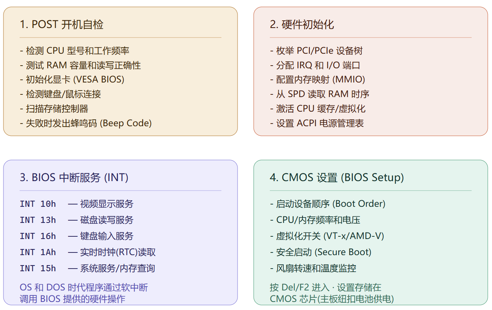
区）；不再读取固定 512 字节的 MBR 扇区，而是直接从 FAT32 格式的 EFI System Partition 读取 .efi 引导文件——这意味着引
导程序就是一个普通文件，不再是塞在第一个扇区里的硬编码二进制。
UEFI 最重要的安全特性是 Secure Boot（安全启动）：启动时验证引导程序的数字签名，只有被信任的密钥签名的 OS 引导程序才
能执行，从根源上防止 bootkit 等底层恶意软件。此外 UEFI 内置网络栈，支持远程诊断和 PXE 网络启动，还有图形化设置界面和鼠
标操作。
2012 年以后的主板已全面采用 UEFI。但有趣的是，直到今天人们仍然习惯说"进 BIOS 设置"——实际上进入的是 UEFI 设置界面。
大多数 UEFI 还提供 CSM（兼容性支持模块），可以模拟传统 BIOS 的 MBR 启动方式，用于兼容旧操作系统。
1.3 BMC
BMC（Baseboard Management Controller，基板管理控制器）是服务器主板上的一颗独立微控制器——它拥有自己的 CPU、
内存、网口和固件，完全独立于服务器主 CPU 和操作系统运行。即使服务器完全断电（但电源线还插着），BMC 仍然在工作, 管理
员仍可通过 BMC 远程查看传感器、开关机、用 KVM 看屏幕、挂 ISO 装系统。它背后是 Aspeed 芯片硬件 + IPMI/Redfish 协议 + 各
厂商定制固件组成的一整套服务器管理生态。
1.3.1 BMC架构
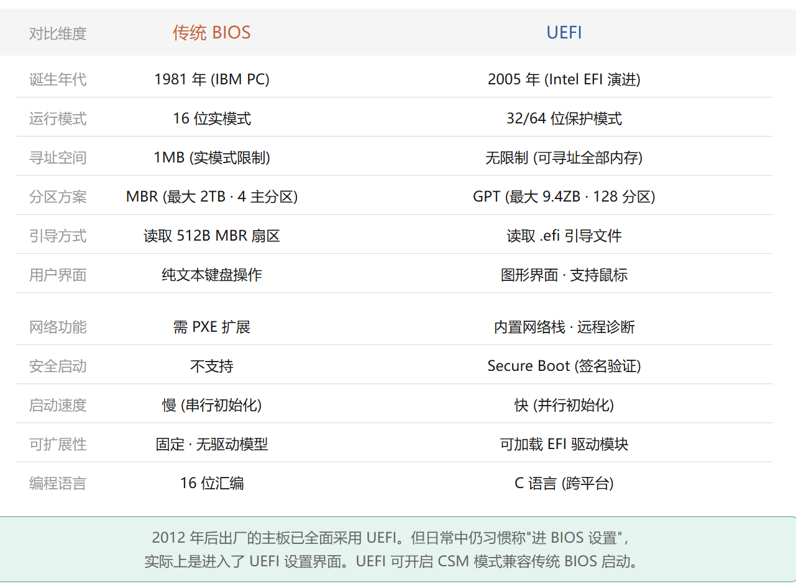
•
固件层 — 各大厂商的 BMC 实现
所有服务器厂商都有自己的 BMC 品牌化实现，但底层硬件几乎都来自同一家公司——台湾的信骅（Aspeed），其
AST2500/AST2600 芯片占据全球BMC SoC 市场 70% 以上份额：
•
协议层 — IPMI vs Redfish
◦IPMI（智能平台管理接口）
IPMI（Intelligent Platform Management Interface）1998 年由 Intel/HP/Dell/NEC 联合制定，是最早的 BMC 管理协议
标准。通过 UDP 623 端口通信，使用二进制的 RMCP 消息格式。命令行工具 ipmitool 是最常用的管理入口：
▪
ipmitool sensor list — 读取所有传感器数据
▪
ipmitool power on/off/reset — 远程控制电源
▪
ipmitool sol activate — 开启 Serial over LAN
IPMI 的问题是二进制协议难以扩展，安全性依赖 UDP 层的简单口令。
◦Redfish：
Redfish接口是2015 年由 DMTF（分布式管理任务组）发布的新一代标准，用 RESTful API + JSON + HTTPS 彻底取代了
IPMI 的二进制协议。任何能发 HTTP 请求的工具（curl、Python、Ansible、Terraform）都能管理 BMC，天然适合自动化：
代码块
GET https://bmc-ip/redfish/v1/Systems/1 → 获取服务器信息
GET /redfish/v1/Chassis/1/Thermal → 获取温度传感器
POST /redfish/v1/Systems/1/Actions/Reset → 远程重启
•
物理层 — BMC SoC 芯片
AST2500（单核 ARM11 @ 800MHz）和 AST2600（双核 Cortex-A7 @ 1.2GHz）。这些芯片运行着一个精简的 Linux 系统，
BMC 固件本质上就是一个裁剪过的 Linux 发行版。OpenBMC 项目更是直接把 Yocto Linux 搬到了 BMC 上，用 systemd、D-Bus、
Python 等标准 Linux 组件替换了传统闭源固件。
1.3.2 BMC所在服务器的位置
1
2
3
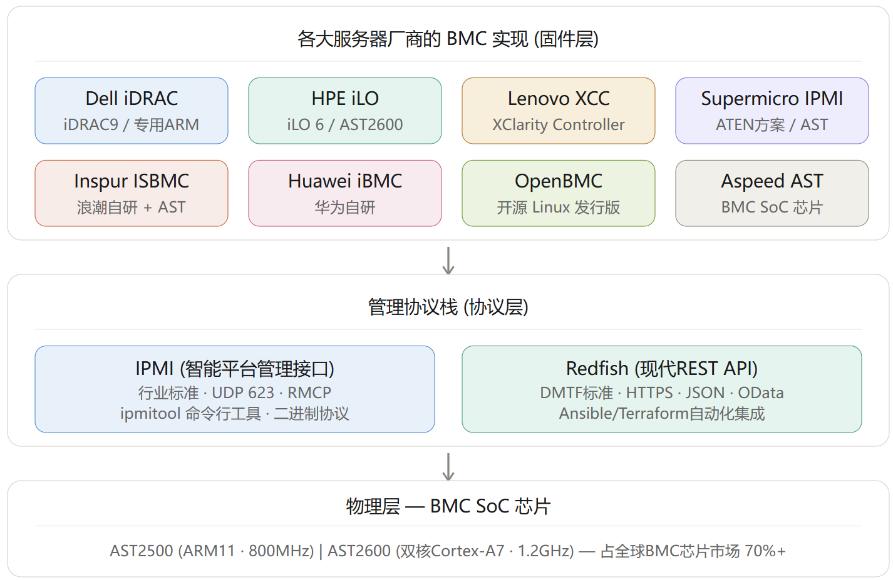
1.3.3 BMC主要功能
1.3.3.1 硬件健康监控 — BMC 存在的最根本理由
这是 BMC 最核心、数据流最密集的功能。它通过多种低速总线，像一个永不休息的医生，持续对服务器的每一个关键组件
做"体检"：
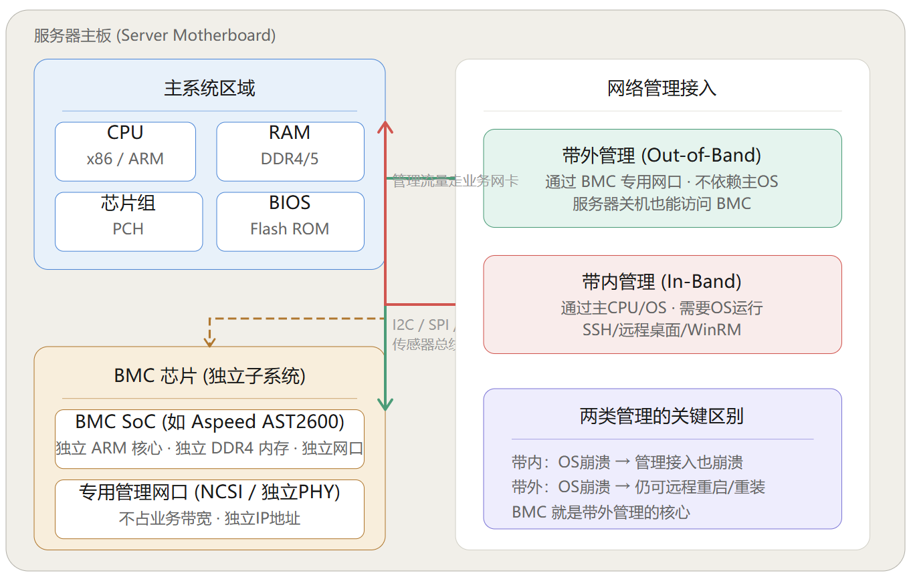
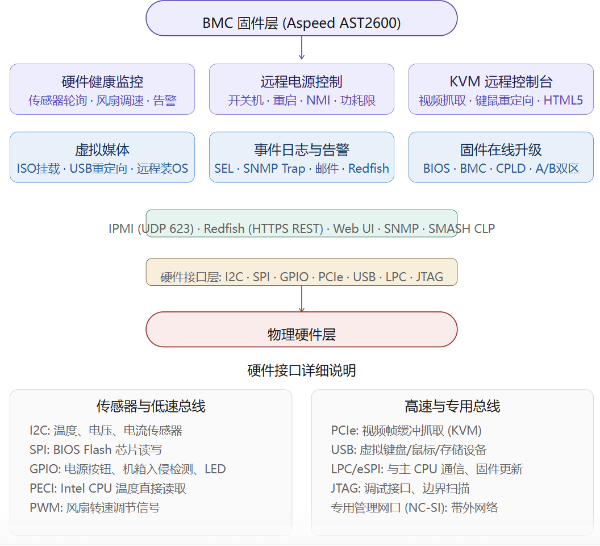
传感器数据从底层到上层经过完整的处理链路：
◦数据采集层：BMC 通过 I2C 总线挂载数十颗传感器芯片 [包括CPU 每颗核心的 DTS（数字温度传感器）、各路 VRM 电压调
节器的输出监测引脚、电源管理芯片的 PMBus 协议读数、风扇的 PWM 反馈信号】 ，BMC还通过 PECI（Platform
Environment Control Interface）直接读取 Intel CPU 内部温度寄存器，比 I2C 更快更精确。一次完整的传感器扫描通常耗
时 1-5 秒，所有数据写入 SDR。
◦闭环控制层：核心是 PID 温控算法。BMC 不是"热了就最大转速"那么简单——它会计算当前温度与目标值的偏差，通过比例
(P)、积分(I)、微分(D)三项加权，输出精确的 PWM 占空比（通常在 20%-100% 之间连续调节）。I 项确保长时间后温度能精
确稳定在目标值（消除稳态误差），D 项防止温度在目标附近来回振荡。这个闭环每 1-2 秒执行一次，完全独立于主 CPU
——即使服务器蓝屏后 CPU 满载发热，BMC 照样能加大风冷。
◦告警与保护：当传感器超过预设阈值时，BMC 不只是记日志。对于严重过温（比如 100°C+），它可以通过 PROCHOT 信号
直接通知 CPU 硬件降频，甚至强制拉低电源使能信号触发保护性关机——这是一条绕过所有软件的纯硬件保护链路。
1.3.3.2 远程电源控制 — 真正的不依赖 OS 的控制能力
电源控制的硬件本质上很简单：BMC 的几根 GPIO 引脚直接连接到主板上的电源管理芯片和ATX 电源的 PS_ON信号线。没有
任何中间件、没有操作系统、没有驱动程序——就是一个 GPIO 高低电平切换。
NMI注入是这项功能里最精妙的部分。当运维人员面对一台"ping 不通、SSH 拒绝连接、操作系统完全僵死"的服务器时，如果
直接按 Power Off 就丢失了所有现场。NMI 相当于从硬件层面"掐一下"CPU，让已经停止响应的内核必须跳转到预设的 NMI 处理
函数。在 Linux 上配置好 kdump 后，NMI 会触发内核崩溃转储机制——把物理内存的全部内容写入预先保留的 crashkernel 区域，
再写入磁盘，事后用 crash 工具逐行分析。BMC 让这一切可以远程完成，再也不用冲进机房按 Reset 按钮了。
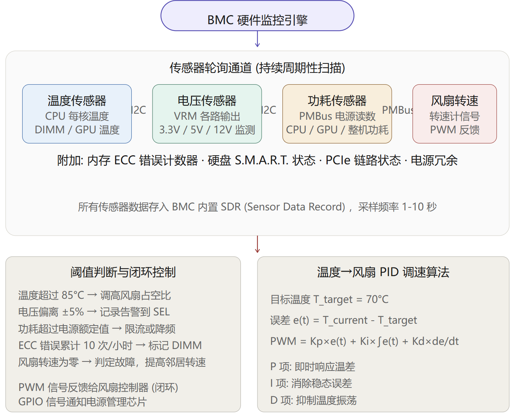
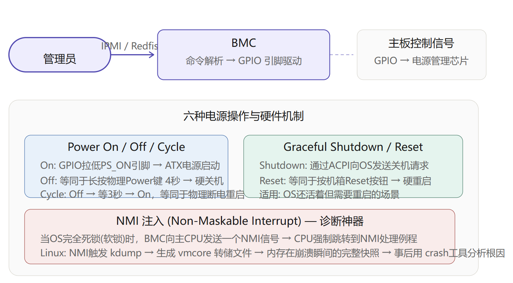
1.3.3.3 KVM 远程控制台 — 就像坐在机房插着显示器
KVM 的工作本质上是一个双向实时流媒体系统。BMC 芯片内部集成了独立的 VGA 显卡（不依赖主服务器的 GPU），它通过
PCIe 通道读取SEL日志中信息进行屏幕呈现。
从 AST2600 开始，KVM 支持 1920×1200 @ 60fps，技术上看 Netflix 画质级别的流传输到管理员的浏览器。对于大多数时间画
面静止的服务器控制台（BIOS 设置界面、命令行），差异帧编码让带宽降到几乎为零。
1.3.3.4 虚拟媒体 — 远程插入光盘和 U 盘
虚拟媒体的本质是 USB 设备模拟。BMC 固件在内核驱动层注册了一个虚拟 USB 设备，该设备连接到主板的 USB 主机控制
器。当服务器上电自检时，BIOS 扫描 USB 总线发现这个设备，将其识别为标准 CD-ROM 或 USB Mass Storage。之后的操作系统
也把它当作普通光驱。
实现细节：BMC 固件内部运行一个精简 Linux 内核，包含 USB Gadget 驱动框架。当一个 ISO 被挂载时，BMC 为这个文件创建一个
块设备（通过 loop 设备），然后 USB Gadget 子系统将这个块设备暴露为 SCSI 设备。服务器主机发来的 SCSI
READ(10)/READ(12) 命令被 BMC 截获，翻译成对 ISO 文件的随机读取操作。整个过程对服务器完全透明。
高级功能还包括 URL 远程拉取——管理员直接给 BMC 一个 HTTP/NFS/CIFS 链接，BMC 自己去下载 ISO 然后挂载，管理员的笔记
本不需要持续在线。
1.3.3.5 事件日志与告警
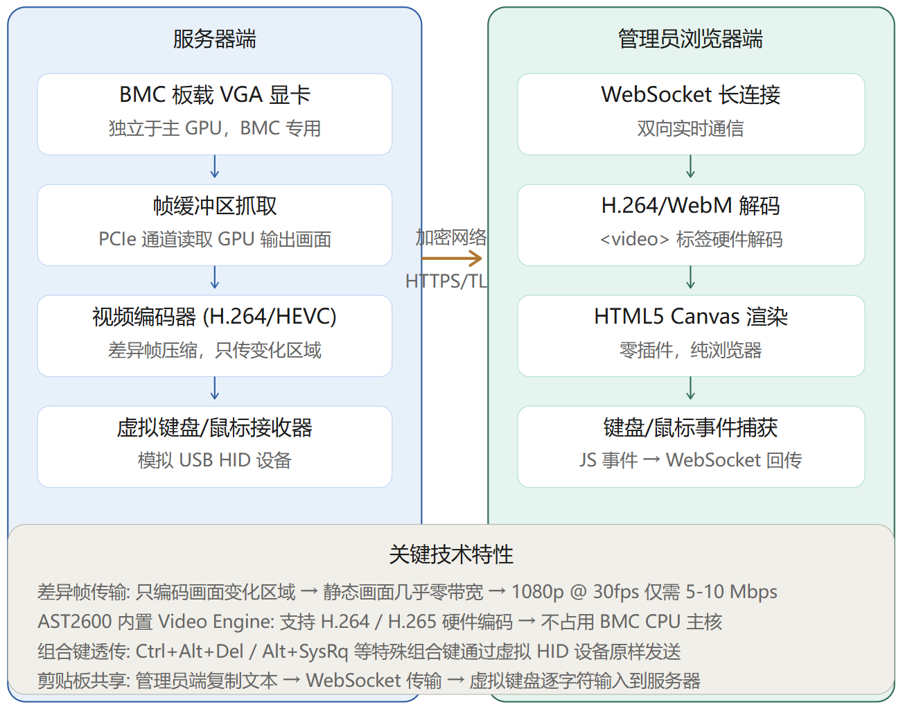
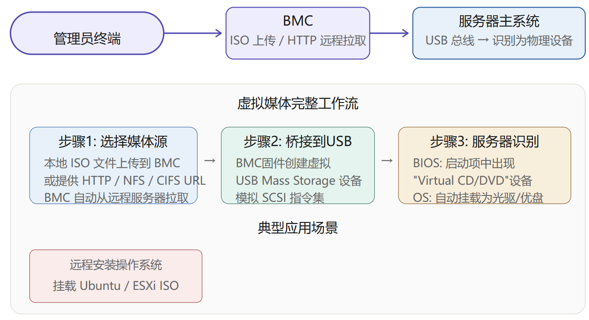
SEL 存储在 BMC 自己的 Flash 芯片中，断电不丢失。IPMI 规范定义了固定格式——每条事件有"断言(deassert)"和"解除
(deassert)"两种状态：当 CPU 温度从 82°C 升到 86°C（超过 85°C 阈值），产生一条"温度上限断言"事件；当温度降回 84°C，再产
生一条"温度上限解除"事件。运维团队从日志中能看到问题的完整时间窗口。
Redfish EventService 是现代替代方案，取代了 IPMI 的 SEL 二进制格式。它支持 SSE（Server-Sent Events）——运维系统可
以建立一个长连接，BMC 实时推送 JSON 格式的事件，无需轮询。配合 Ansible / Terraform 可以实现自动化告警→自动化脚本响应
的闭环。
1.3.3.6 固件在线升级 — 远程刷写 BIOS 和自身
A/B 双区是固件升级的安全底线。BMC 的 Flash 物理上分为两个等大的分区。正常运行时从 A 区启动；升级时新固件写入 B 区，A
区的当前版本完全不受影响。重启后 BootROM 尝试从 B 区引导，如果新固件导致 BMC 无法正常启动（比如内核崩溃），
Watchdog 超时后 BootROM 自动切回 A 区——整个过程不需要人工干预。这保证了"升级可能失败，但 BMC 一定能活过来"。
1.3.3.7 附加功能：用户管理与安全模型
BMC 作为一个暴露在网络上的服务器管理入口，安全设计非常关键：
•
多级用户权限体系：
◦Administrator：完整权限，可刷固件、配置网络、管理其他用户
◦Operator：可开关机、查看传感器、使用 KVM，但不能改配置
◦User：只读权限，只能查看传感器和日志
◦基于 IPMI 通道的权限隔离：可以限制某个用户只能通过局域网访问、不能通过串口
•
网络隔离（NC-SI 专用网口 vs 共享网口）：
◦专用模式：BMC 独占一个物理网口，拥有独立 IP，完全与业务网络隔离。这是数据中心的推荐配置
◦共享模式：BMC 通过 NC-SI 协议共享服务器的板载网卡——省一个交换机端口，但带内/带外流量混跑有安全风险
•
加密与防篡改：
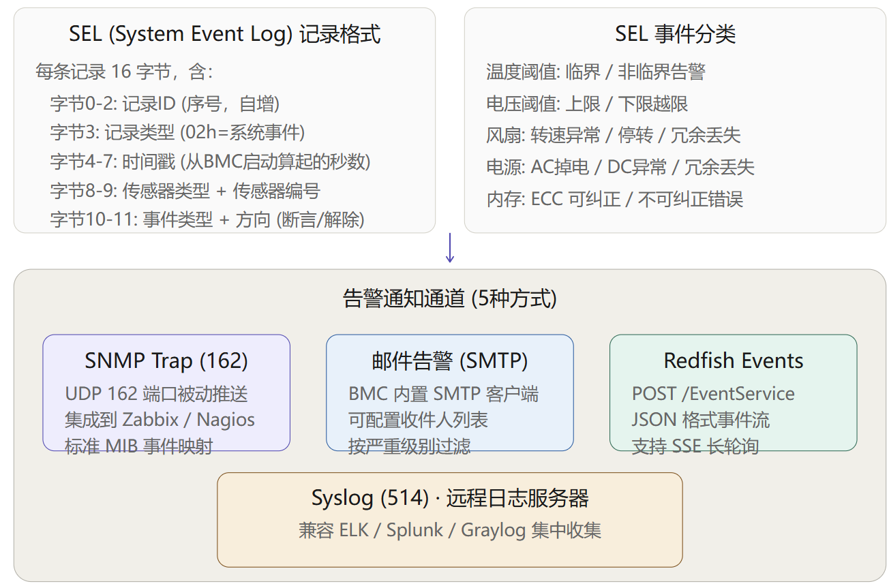
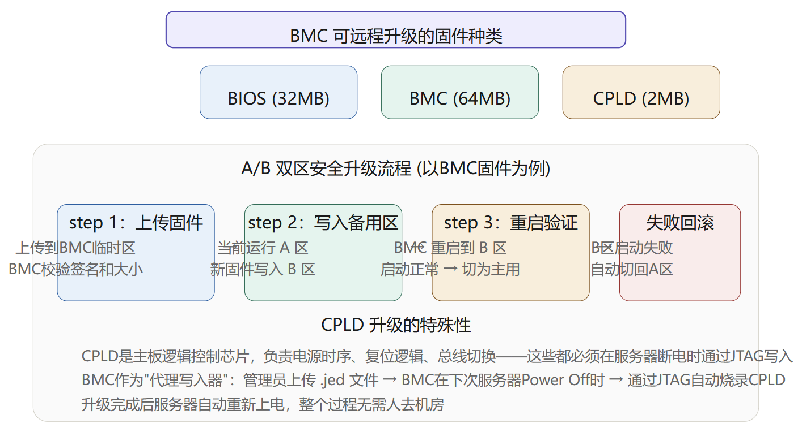
◦所有 Web 管理界面强制 HTTPS（TLS 1.2+），自签证书可替换为企业 CA 签发证书
◦固件升级签名验证：BIOS 和 BMC 镜像在刷写前必须通过 RSA/SHA-256 签名校验
◦UEFI Secure Boot 集成：BMC 固件的引导链（BootROM → U-Boot → Linux Kernel）每一步都验证签名
◦防降级攻击：BMC 记录固件版本号，拒绝刷入比当前版本更旧的镜像（防止攻击者用有已知漏洞的旧版本覆盖）
六大功能速查表
一句话总结：BMC 是服务器内部的"第二台计算机"，它通过传感器监控、电源控制、KVM 远程操作、虚拟媒体、日志告警和固件升
级六大功能，实现了对服务器的完全带外管理——不需要操作系统配合，不需要进机房，甚至服务器没开机都能操作。它的核心价
值在于一个机房运维的最朴素愿望：凌晨三点服务器挂了，你躺在床上用手机就能修好它。
1.4 总线
1.4.1 地址总线/数据总线/控制总线
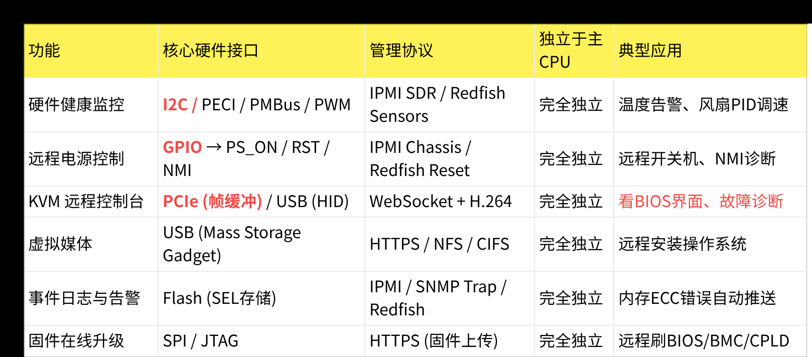
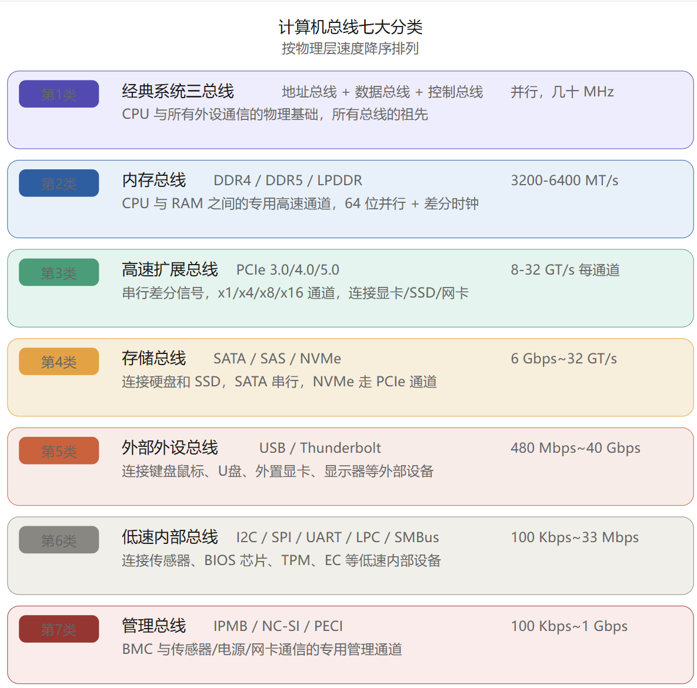
计算机 CPU 和内存、外设之间依靠系统总线通信，总线分为三类，各司其职、互不混淆。
1.4.1.1 地址总线 Address Bus（AB）
•
单向传输：CPU 向外发送地址，用来指定要访问哪个存储单元 / 外设端口
◦CPU 把目标编号（内存地址、IO 端口地址）放到地址总线上；
◦内存 / 外设识别到属于自己的地址，准备和 CPU 交互；
◦只有被寻址到的硬件才会响应，其他硬件忽略信号。
•
关键特点
a. 单向总线：信号只能 CPU → 外设 / 内存，外部设备不能往地址总线发信号；
b. 位数决定寻址空间：地址总线宽度 = n 位，则最大寻址单元数 =
2n
▪32 位地址总线：最大寻址2^(32)=4GB内存；
▪64 位地址总线：理论寻址空间超大（PB 级别）；
c. 只读定位，不传输数据、命令，只传 “门牌号”；
d. 所有硬件共享同一组地址线，同一时刻只能有一个地址。
1.4.1.2 数据总线 Data Bus（DB）
•
双向传输：传输真正的数据、指令
a. 读操作：内存 / 外设 → CPU（数据、程序指令读入 CPU）；
b. 写操作：CPU → 内存 / 外设（运算结果、待保存数据写出去）。
•
关键特点
a. 双向总线：数据可以双向流通；
b. 宽度决定单次传输吞吐量： 常见 8/16/32/64 位数据总线。64 位 CPU一次能传8字节数据，比32位效率更高；
c. 分时复用：同一时刻只能单向传输，不能同时读写；
d. 传输内容无区分：指令、变量、图片、文字全部都走数据总线。
1.4.1.3 控制总线 Control Bus（CB）
主要用于传递CPU发出的读写、时序、握手、中断等控制命令，协调硬件动作。 常见控制信号举例：
a.
MEM_READ ：内存读信号，CPU 通知内存 “把数据发给我”；
b.
MEM_WRITE ：内存写信号，CPU 通知内存 “接收我发的数据并保存”；
c.
IO_RD / IO_WR ：读写外部设备（键盘、显示器）；
d. 时钟信号 CLK：统一所有硬件工作节拍；
e. 中断信号 IRQ：外设向 CPU 发送请求（键盘按下、网卡收到数据）；
f.
就绪信号 READY：内存告诉 CPU “数据准备好了”。
•
关键特点
a. 双向混合总线：一部分控制线 CPU 向外输出（读写命令），另一部分外设向 CPU 输入（中断、就绪信号）；
b. 信号线独立，数量不固定（十几根～几十根），不像地址 / 数据总线是完整一组并行线；
c. 指挥协调作用：如果没有控制总线，那么CPU只发地址和数据，硬件不知道该读还是写；
d. 时序同步：依靠控制信号保证 CPU、内存、外设速度匹配，防止数据错乱。
1.4.1.4 三者协同工作流程（读取内存示例）
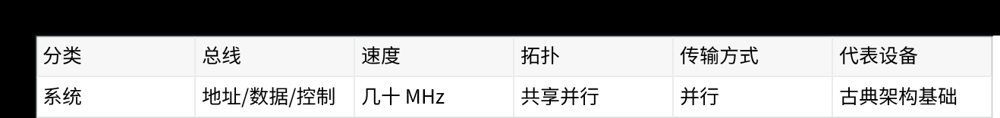
•
读取内存地址 0x100 里的数据：
a. CPU 将地址0x100 送到地址总线（单向输出）；
b. CPU 通过控制总线发送MEM_READ 读信号；
c. 对应内存芯片识别地址，取出该地址存储的数据；
d. 内存把数据送上数据总线，传回 CPU；
e. 内存通过控制总线发送就绪信号，本次读取完成。
•
写入内存流程：
a. CPU 发送目标地址到地址总线；
b. CPU 把待写入数据放到数据总线；
c. 控制总线发出MEM_WRITE 写信号；
d. 内存接收数据并保存到对应地址单元。
1.4.2 内存总线（DDR总线）
DDR = Double Data Rate 双倍数据速率，DDR是CPU内存控制器和外部内存条之间的专用高速并行总线，专门负责 CPU 和主
存（内存）的数据交互，替代传统老式 SDR 内存总线。 逻辑上可以拆分出地址通道、数据通道、控制信号，对应之前讲的系统三大
总线，但 DDR 做了特殊优化。
DDR 总线相当于 CPU 和内存之间的高速双向货运专线：
◦地址控制线 = 送货地址 + 调度指令，告诉内存要去哪个货架存取；
◦DQ 数据总线 = 货运车厢，上下沿同时装卸货物（双倍速率）；
◦差分时钟 / DQS = 统一节拍计时器，保证收发货物时间对齐，高速不混乱。
1.4.2.1 DDR 总线三大核心信号组（对应地址 / 数据 / 控制总线）
•
地址/命令总线（对应系统地址总线 + 控制总线）：包含引脚：地址线 A、Bank 地址 BA、行选通 RAS、列选通 CAS、写使能
WE、片选 CS 等
a. 功能
▪向内存发送要访问的存储地址（行地址、列地址、内存 Bank 编号）；
▪下发操作命令：读、写、预充电、刷新、激活、休眠；
▪单向传输：只能内存控制器→内存颗粒，和传统地址总线一样单向。
b. 关键特点：地址线分时复用 DDR 引脚数量有限，先发送行地址，再发送列地址，同一组地址线分两次传完整地址，节省硬件
引脚。
c. 额外功能：发送时序配置参数、内存刷新指令（DRAM 电容漏电，必须定期刷新保存数据）。
•
数据总线 DQ（核心传输通道，对应系统数据总线）: 引脚：DQ 数据线、数据掩码 DM、差分数据选通 DQS
a. 核心功能 双向通道：CPU 读内存时，数据从内存颗粒传给控制器；CPU 写内存时，控制器下发数据到内存。 所有程序、变
量、指令、缓存置换数据全部走 DQ 总线。
b. DDR 最核心特性：双倍速率传输 SDR 内存只在时钟上升沿传一次数据； DDR 在时钟上升沿 + 下降沿各传一次，同频率下带
宽直接翻倍，这也是 DDR 名字来源。
c. DQS 差分同步信号 和 DQ 数据线配对，用于对齐数据采样，高速下避免数据错位，DDR4/DDR5 全部使用差分信号抗干扰。
d. 数据掩码 DM：用来屏蔽不需要写入的字节，实现局部字节读写。
•
控制 / 时钟总线（时序协调）
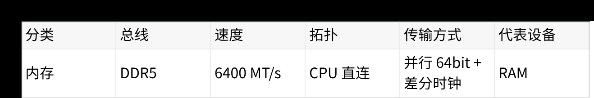
a. 差分时钟 CK/CK#：给所有内存颗粒提供统一工作节拍，差分时钟抗电磁干扰；
b. 复位、电源使能、ODT 终端匹配控制：高速总线必须开启终端电阻，防止信号反射失真；
c. ZQ 校准引脚：自动校准总线阻抗，保证高频信号完整性；
d. 握手信号：内存告知控制器数据是否准备完成。
1.4.2.2 DDR 内存总线整体核心功能
a. 高速读写主存数据: CPU 缓存（L1/L2/L3）容量很小，程序大部分数据存放在 DDR 内存；CPU 缺失缓存时，通过 DDR 总线
批量读取数据。
b. 地址寻址：DRAM 存储单元 DRAM 内部分为多个 Bank、行、列，地址总线分时发送行列地址，精准定位每一个存储电容单
元。
c. 同步时序控制 通过统一时钟、DQS 同步信号，让内存控制器和内存颗粒严格同步，保障高速下数据不出错。
d. 内存刷新管理 DRAM 靠电容存电保存数据，电荷会流失，控制器通过 DDR 控制总线定期发送刷新命令，防止数据丢失。
e. 双向批量传输： 提供高带宽 64 位宽数据总线（标准台式机内存条位宽 64bit）+ 双倍速率，搭配高频，实现 GB/s 级带宽，
支撑游戏、多任务、视频渲染。
f.
阻抗与信号校准 配套 ZQ、ODT 控制信号，自动调整总线电气特性，高频（DDR5 可达 7200MT/s 以上）减少干扰、信号反
射。
1.4.2.3 关键独有特点（和传统系统总线区分）
a. 分时复用地址线：传统系统地址总线一次性送出完整地址，DDR 为减少引脚，分行地址、列地址两次传输。
b. 双边沿双倍传输： 独有的 DDR 机制，是和 SDR 内存总线最大区别，成倍提升带宽。
c. 严格同步差分信号： 时钟、DQS 全部差分传输，高频下抗干扰能力远强于老式并行总线。
d. 专用点对点 / 多点总线拓扑： CPU 内存控制器直连内存条，不再共享总线（老式 PCI 总线多设备争抢带宽），内存独占通
道。
e. 突发传输为主： DDR 总线不支持单字节随机读写，默认突发长度（BL8 一次连续读 8 个 64bit 数据），批量传输提升效率，
符合 CPU 缓存块读取特性。
f.
分离电源与信号域 总线区分控制信号、数据信号供电，支持节能降频，空闲时降低总线时钟省电。
1.4.2.4 一次 DDR 读操作完整流程（总线协同工作）
a. 控制总线发送时钟，控制器通过地址总线发送 Bank + 行地址，发送 RAS 行激活命令；
b. 等待行激活完成，地址总线发送列地址 + CAS 读命令；
c. 内存颗粒根据行列地址取出数据，通过 DQ 数据总线，跟随 DQS 双边沿同步送出数据；
d. 控制器采样 DQS 信号，同步接收 DQ 上的数据，送入 CPU 缓存。
1.4.2.5 DDR5 相比 DDR4 总线变化
a. 数据速率大幅提升，总线信号更敏感，强化 ZQ 自动校准；
b. 电源管理集成到内存条（PMIC 电源芯片），控制总线增加电源调节信号；
c. 采用双通道独立时钟，两条内存通道时序互不干扰；
d. 数据总线分组，进一步降低高速信号串扰。
1.4.3 高速扩展总线（PCIE/CXL）
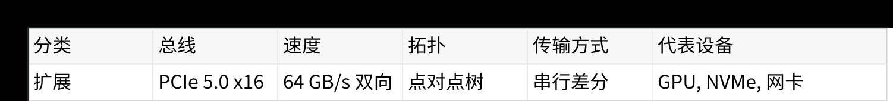
1.4.4 存储总线
1.4.5 外设总线
1.4.6 低速内部总线
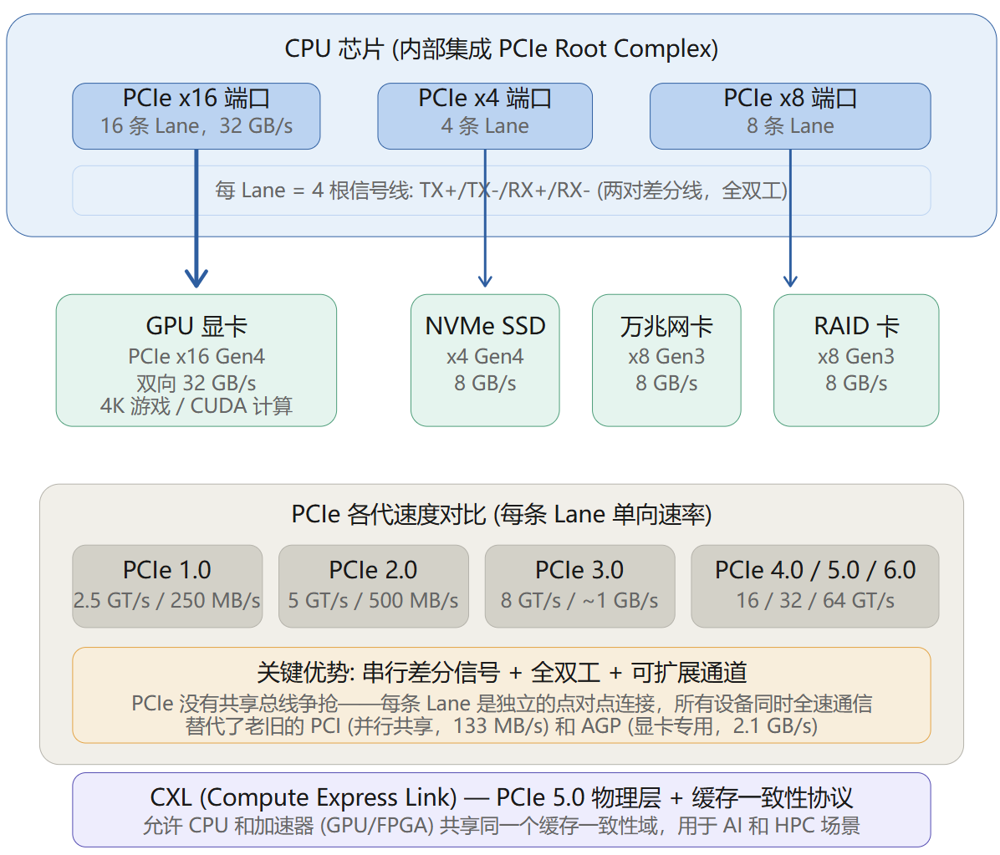
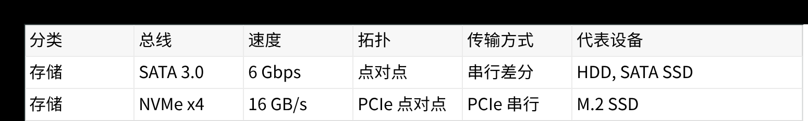
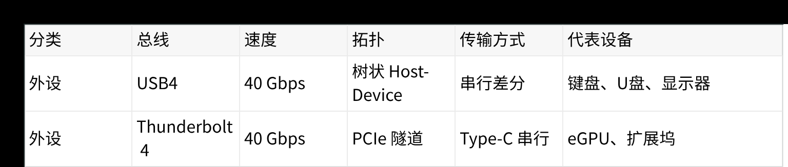
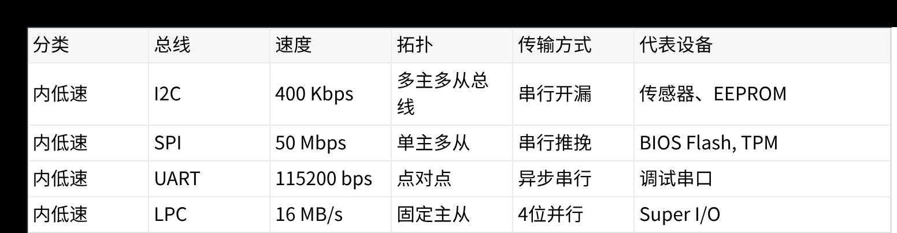
1.4.7 管理总线
1.5 CPLD
CPLD 全称：Complex Programmable Logic Device，复杂可编程逻辑器件。 属于可编程逻辑器件 PLD 家族，是大规模、可
反复烧写的数字逻辑芯片，内部集成大量逻辑门、触发器、互连布线资源，用户通过软件编程自定义硬件电路，不用制版流片。
PLD 发展脉络（简单区分）
a. PAL/GAL：简单 PLD，逻辑规模很小，只有几十门；
b. CPLD：中等规模，几千～几万逻辑门，非易失存储；
c. FPGA：大规模，几万～百万门，搭配 RAM 架构，适合复杂算法。
•
CPLD 内部硬件架构与核心结构
a. 逻辑块 LAB（功能单元块）： CPLD 由多个独立的逻辑阵列块组成，每个 LAB 内部包含：与阵列、或阵列、触发器（寄存
器），可以实现组合逻辑、时序逻辑。
b. 全局互连矩阵（可编程布线池）： 所有 LAB 之间通过统一可编程交叉矩阵连接，布线资源丰富、延迟固定可预测。
c. I/O 模块： 芯片引脚可编程配置为输入、输出、三态、上拉电阻。
d. 非易失编程存储单元（Flash/EEPROM）： 核心特征：逻辑配置代码存片内 Flash，断电不丢失程序，上电立刻加载逻辑，
无需外部配置芯片。
•
CPLD 核心功能
a. 自定义数字逻辑电路 替代传统分立芯片（74 系列逻辑门、译码器、计数器、触发器、比较器），一片 CPLD 替代十几片逻
辑芯片，简化 PCB。
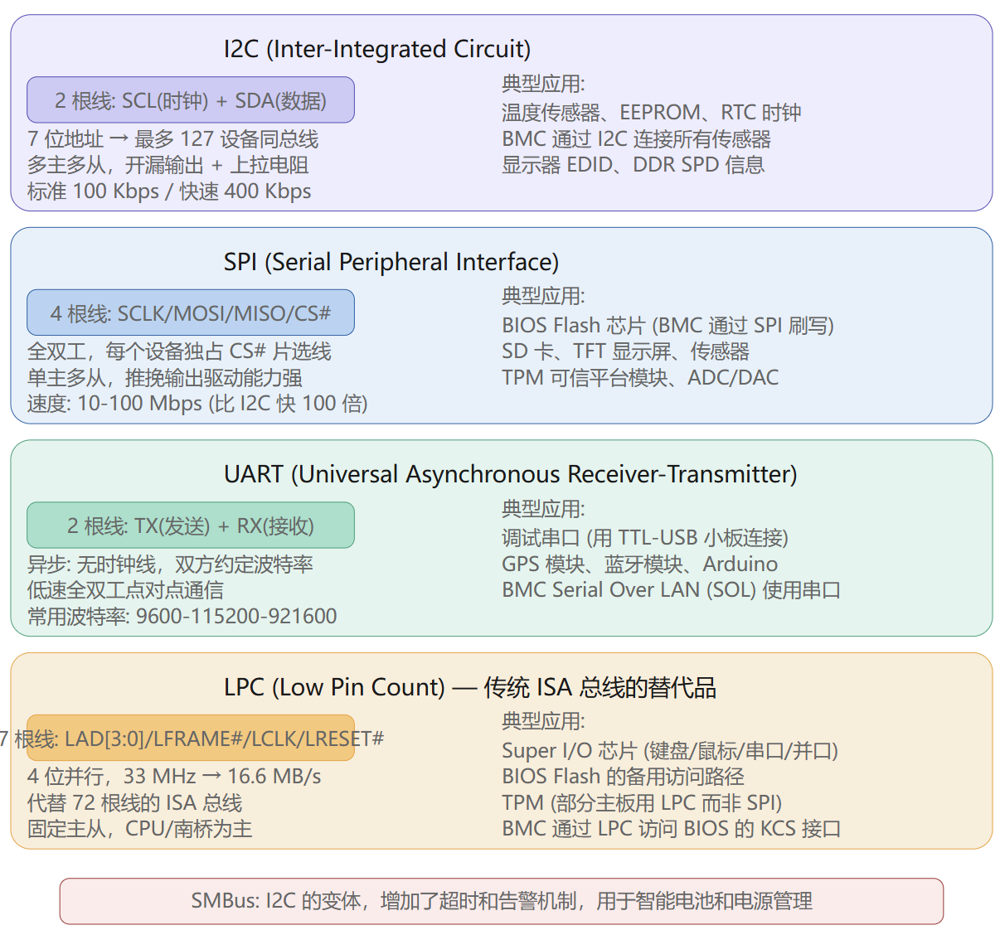
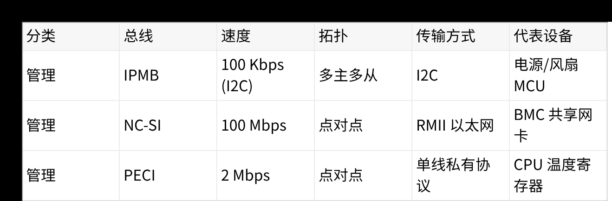
b. 时序控制、状态机实现 适合有限状态机 FSM、分频、脉冲产生、时序匹配、逻辑仲裁。
c. 总线逻辑扩展与地址译码 单片机/CPU 系统地址译码、片选逻辑、IO 端口扩展、总线缓冲、中断逻辑。
d. 电平转换、信号整形、逻辑电平匹配 多电压域信号转换、毛刺滤波、同步异步信号同步化。
e. 上电复位、电源时序管理 多芯片系统按顺序上电、掉电保护、硬件看门狗。
f.
接口桥接、简单协议转换 简易串口、并行 IO 转换、简单 SPI/I2C 低速协议处理。
g. 硬件加密、系统逻辑锁死 可加密配置程序，防止抄板逆向，保护产品电路设计。
•
CPLD 关键特性（对比 FPGA）
优点
a. 掉电保存配置 使用 Flash 存储逻辑，上电直接工作，不用外挂 Flash 配置芯片，简化外围电路。
b. 时序延迟固定、可精确计算 内部互连路径固定，信号传输延迟稳定，无不可控布线延迟，适合对时序严苛的工业控制。
c. 静态功耗极低 闲置时几乎无功耗，适合电池供电、低功耗设备。
d. 成本低、体积小、上电瞬间工作 中小规模逻辑场景性价比远超 FPGA。
e. 抗干扰强，可靠性高 结构简单，工业温域宽，耐高低温、电磁干扰，适合工控、军工。
缺点
a. 逻辑资源有限，不适合大规模运算: 无法实现复杂 DSP、图像算法、处理器内核（这类用 FPGA）。
b. 寄存器、存储资源少: 缺少大量 RAM 块、乘法器，浮点、高速并行运算能力弱。
2. 硬件构成
2.1 设备整体
计算机硬件从上到下的四层逻辑结构：
2.1.1 CPU 中央处理器（蓝色区域）
CPU主要包括如下几个组件：控制单元CU、算术逻辑单元ALU、寄存器、告诉缓存Cache（L1/L2/L3）
•
控制单元 (CU)：整个系统的"指挥中心"，负责从内存中取指令、译码，并产生控制信号协调各部件工作
•
算术逻辑单元 (ALU)：执行加减乘除、逻辑与或非等所有运算操作
•
寄存器 (Registers)：CPU 内部速度最快的小容量存储，包括程序计数器 (PC)、指令寄存器 (IR)、累加器等
•
Cache 高速缓存：位于 CPU 和主存之间的三级缓存 (L1/L2/L3)，L1 最快但最小（通常 32-64KB 每核），L3 最大但稍慢（通常
几 MB 到几十 MB 共享）
2.1.2 系统总线（灰色条）
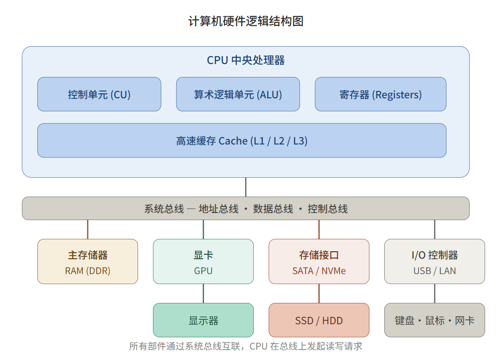
CPU 与所有外部设备通信的唯一通道，分为三种信号线：
2.1.3 控制器与接口
•
主存储器 RAM：挥发性存储，存放正在运行的程序和数据
•
显卡 GPU：专为并行计算设计的图像处理器，通过 PCIe 总线与 CPU 通信
•
存储接口 SATA/NVMe：连接硬盘的协议和接口，NVMe 走 PCIe 通道，速度远超 SATA
•
I/O 控制器 USB/LAN：管理键盘、鼠标、网卡等低速外设
2.1.4 外围设备 (IO设备)
各控制器连接的终端设备——GPU驱动显示器，存储控制器连接 SSD/HDD，I/O 控制器连接键盘、鼠标和网卡。
2.1.5 现代架构的演进
在实际的现代 PC 中，上述经典结构已经发生变化：
•
内存控制器被集成到 CPU 内部，RAM 通过独立的专用通道直连 CPU；传统的北桥消失，南桥演变为 PCH（平台控制器中
枢），
•
GPU 和 NVMe SSD 通过高速 PCIe 通道直接挂在 CPU 下面，
•
只有 USB、SATA、网卡等低速设备仍通过 PCH 连接。但逻辑层次上，所有部件依然通过某种形式的总线结构与 CPU 互通。
2.2 架构
2.2.1 冯诺依曼架构（普林斯顿架构）
1945 年冯・诺依曼提出，程序指令与数据共用同一块存储器、同一套数据总线，是现在 PC、服务器、手机通用 CPU（x86、
ARM Cortex-A 系列）的基础架构。
2.2.1.1 工作流程（存储程序原理，核心精髓）
1. 把程序指令(代码）和运算数据一起存入同一个内存；
2. CPU 通过唯一总线，先从内存读取指令，译码；
3. 再通过同一根总线读取这条指令需要操作的数据；
4. ALU 计算，结果写回共享内存。
2.2.1.2 优缺点分析
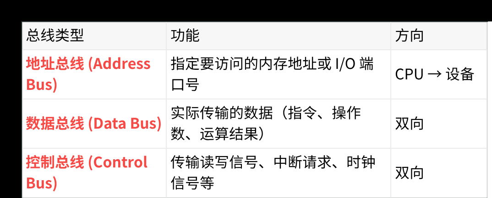
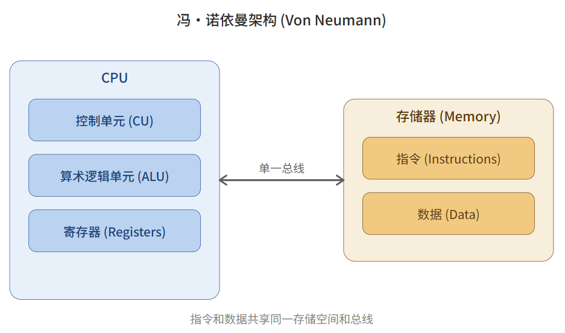
✅ 优点
•
硬件结构简单：只需要一套总线、一块内存，成本低；
•
内存空间统一管理，程序灵活，可以动态修改代码（自修改程序、操作系统）；
•
通用性极强，通用计算机全部采用此架构。
❌ 致命缺陷：冯・诺依曼瓶颈：
•
指令和数据抢同一组总线，同一时刻只能读指令或读数据，不能并行；
•
CPU 运算速度远快于内存读写，总线成为性能上限，存在读写等待延迟。
2.2.2 哈佛架构
为解决冯诺依曼总线冲突，把存储器完全拆成两块独立空间：
•
程序存储器（存指令，只读 ROM/Flash）
•
数据存储器（存变量、临时数据，读写 RAM） 配套两套完全独立的总线：指令总线、数据总线，可以同时读取指令 + 数据，并
行工作。
2.2.2.1 硬件结构特点
1. 双存储器：指令存储、数据存储物理隔离，地址空间互相独立；
2. 双总线：取指令、读写数据两条通道互不干扰；
3. 并行执行：CPU 一个时钟周期内，同时拿指令 + 取数据，吞吐率更高。
2.2.2.2 细分两种版本
1. 纯哈佛架构： 指令、数据存储物理完全分开，地址互不通用，指令存储器一般只读，不能运行时修改程序。 代表：早期 8 位单
片机（PIC、AVR、51 单片机）、DSP 数字信号处理器。
2. 改良哈佛架构（现代主流）：改良哈佛架构是现代 CPU 的标配——它把哈佛和冯·诺依曼两种架构融合在同一颗芯片里。从上到
下的四层结构：
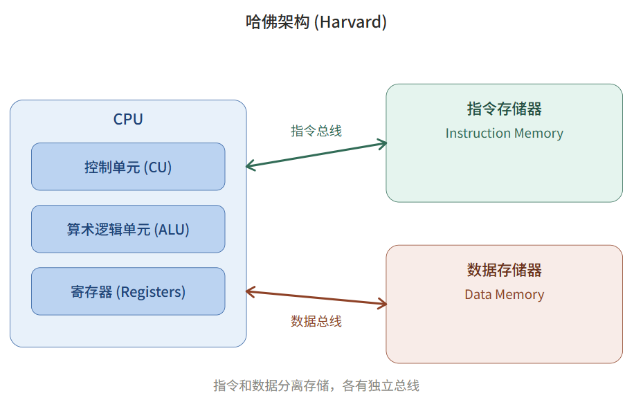
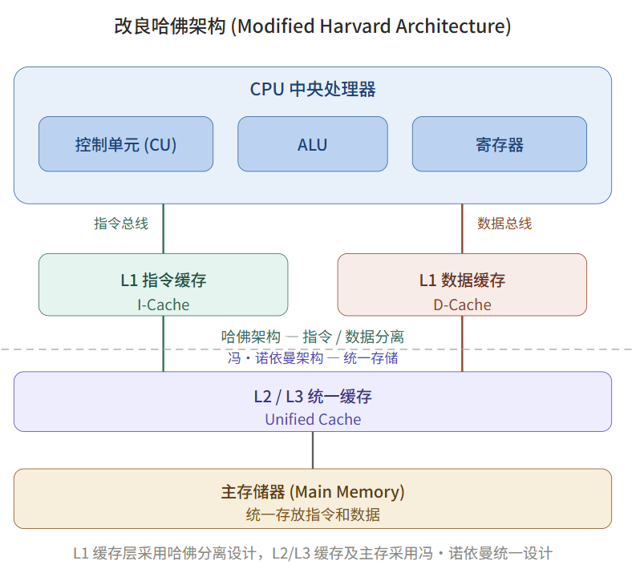
◦L1 层 — 哈佛分离设计（虚线以上）：CPU 通过两条完全独立的通道访问缓存：
▪指令总线（绿色）→ 控制单元取指令 → L1 I-Cache：只存指令，通常是 32KB 或 64KB
▪数据总线（粉色）→ ALU/寄存器读写数据 → L1 D-Cache：只存数据，同样 32KB 或 64KB
两条总线并行工作，CPU 可以同一时钟周期内取指令和读写数据，彻底消除了冯·诺依曼瓶颈。正因为 L1 分离，CPU 才敢
于做超标量、乱序执行等高级优化。
◦L2/L3 及主存 — 冯·诺依曼统一设计（虚线以下）：从 L2 缓存开始，一切回归统一：
▪L2 / L3 统一缓存：不再区分指令和数据，用紫色标识"已合并"——I-Cache 和 D-Cache 缺失时都会向它请求
◦主存储器：和经典冯·诺依曼架构一模一样，指令和数据混存在同一块 DDR 内存里
2.2.2.3 优缺点
✅ 优点
•
无总线争抢，并行读写，执行效率高，适合实时、高频计算；
•
指令存储只读，程序代码不易被篡改，安全性高；
•
流水线执行效率大幅提升，适合信号处理、嵌入式实时控制。
❌ 缺点
•
硬件复杂，双存储、双总线，芯片成本更高；
•
纯哈佛架构指令区与数据区地址独立，无法直接把数据当指令执行，动态加载程序困难；
•
通用操作系统适配麻烦，不适合电脑这类通用设备。
2.2.3 冯诺依曼和哈佛架构核心关键对比表
2.2.4 FAQ
1. 现代高端 CPU（电脑、手机）不是纯粹冯诺依曼： 内部 L1 缓存分成指令缓存、数据缓存（改良哈佛设计），只是外部大内存统
一，兼顾两种架构优势。
2. 为什么电脑不用纯哈佛？ 电脑需要运行软件、更新程序、操作系统动态加载代码，纯哈佛只支持指令只读，会极大限制通用性。
如果从 L1 到主存全部用哈佛分离设计，需要两套独立的物理内存和内存总线——成本翻倍，主板复杂度爆炸，而且灵活性差
（比如程序想修改自身代码时就很麻烦）。改良方案只在 L1 做分离，用最小的硬件代价换取了最大的并行收益。 Intel Core 系
列、AMD Ryzen、ARM Cortex-A 系列全部采用改良哈佛架构。你正在用的这台电脑的 CPU 就是这样工作的。
3. 为什么单片机多用哈佛？ 单片机不需要频繁修改程序，更看重实时响应、快速运算，双总线能降低延迟，控制电机、采集传感器
更稳定。
2.3 指令集
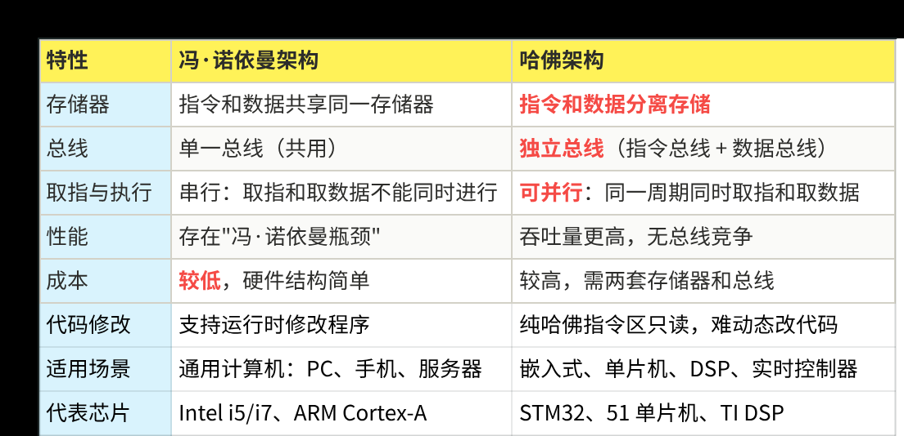
2.3.1 CISC指令集（Complex Instruction Set Computer）
CISC特点是 设计数量多、功能强大、长度不固定的复杂指令，一条指令就能完成一整套复杂操作，用硬件实现复杂运算，减少
软件代码。 CISC典型代表：x86 架构：Intel、AMD 电脑 CPU（i3/i5/i7、锐龙）、老旧工控处理器。
2.3.1.1 CISC指令集关键特点
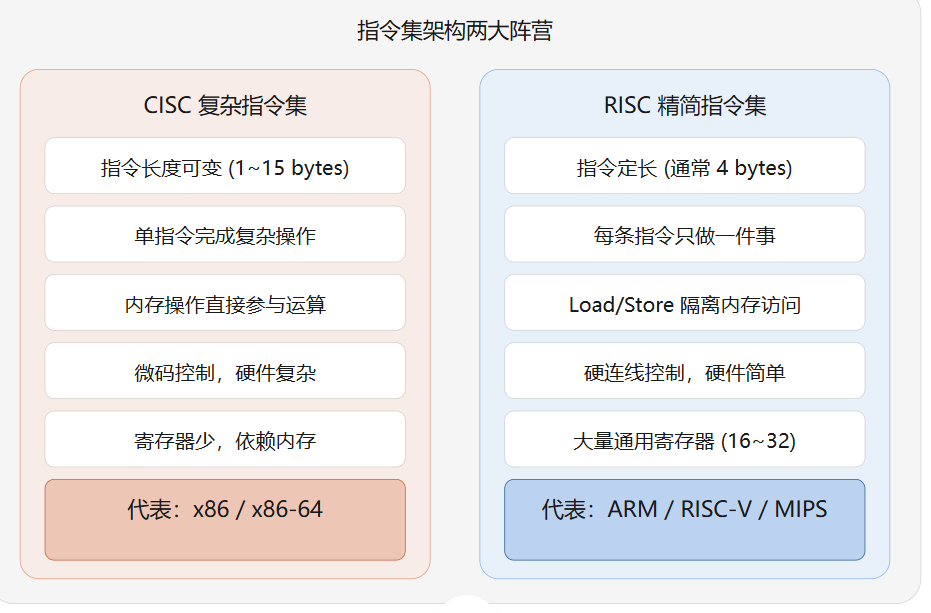
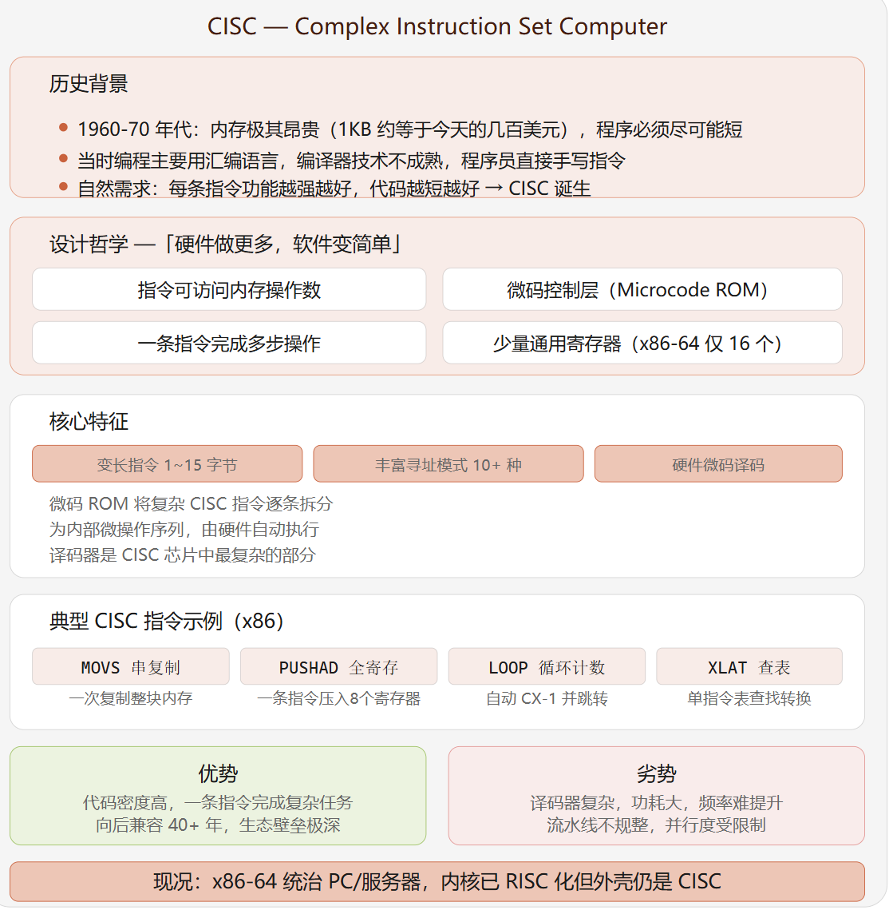
1. 指令数量极多：几百条指令，包含大量专用复杂指令（字符串拷贝、循环、浮点、内存直接运算）。
2. 指令长度可变：指令 1~16 字节不等，解码电路复杂。
3. 内存操作灵活：支持内存 ↔ 内存直接运算，不用先把数据读到寄存器。 例：add [a], [b] 直接把两个内存数字相加存入内
存。
4. 通用寄存器少：寄存器数量有限，大量运算依赖内存。
5. 微程序控制：CPU 内部用微程序解析复杂指令，硬件逻辑复杂。
6. 流水线效率低：指令长短不一，取指、译码节奏混乱，流水线容易阻塞。
2.3.1.2 优缺点
✅ 优点
▪单条指令功能强，高级语言编译后代码短，占用内存小；
▪对编译器友好，早期内存稀缺时代优势明显；
▪向后兼容性极强。
❌ 缺点
▪CPU 硬件复杂，晶体管多、功耗高、主频提升受限；
▪大量复杂指令极少被程序使用，硬件资源浪费；
▪流水线难以优化，执行效率上限低；
▪解码单元复杂，芯片设计难度大。
2.3.2 RISC指令集（Reduced Instruction Set Computer）
70 年代发现，CISC 程序 90% 时间只用到 10% 简单指令，复杂指令几乎闲置。于是提出：只保留最常用、最简单的基础指
令，复杂功能靠多条简单指令组合实现。典型代表：ARM架构的手机/平板/STM32 单片机/苹果M系列芯片
2.3.2.1 RISC核心特点
a. 指令少且简单：只有几十条基础指令（加载、存储、加减、跳转、逻辑运算），无多功能复合指令。
b. 指令定长：所有指令统一4字节，取指、译码简单，流水线极易设计。
c. Load/Store 架构（核心特征）: 只有两条指令能访问内存：load 读内存到寄存器、store 写寄存器到内存。所有算术
/ 逻辑运算只能在寄存器之间完成，不能直接操作内存。
d. 大量通用寄存器：32 个及以上寄存器，运算优先放在高速寄存器，减少慢速内存访问。
e. 硬布线控制：不用微程序，硬件直接解码指令，速度更快、功耗更低。
f.
流水线高效：定长指令天然适配多级流水线、超标量、乱序执行。
2.3.2.2 RISC优缺点
✅ 优点
◦芯片硬件简单，晶体管更少、功耗低、发热小；
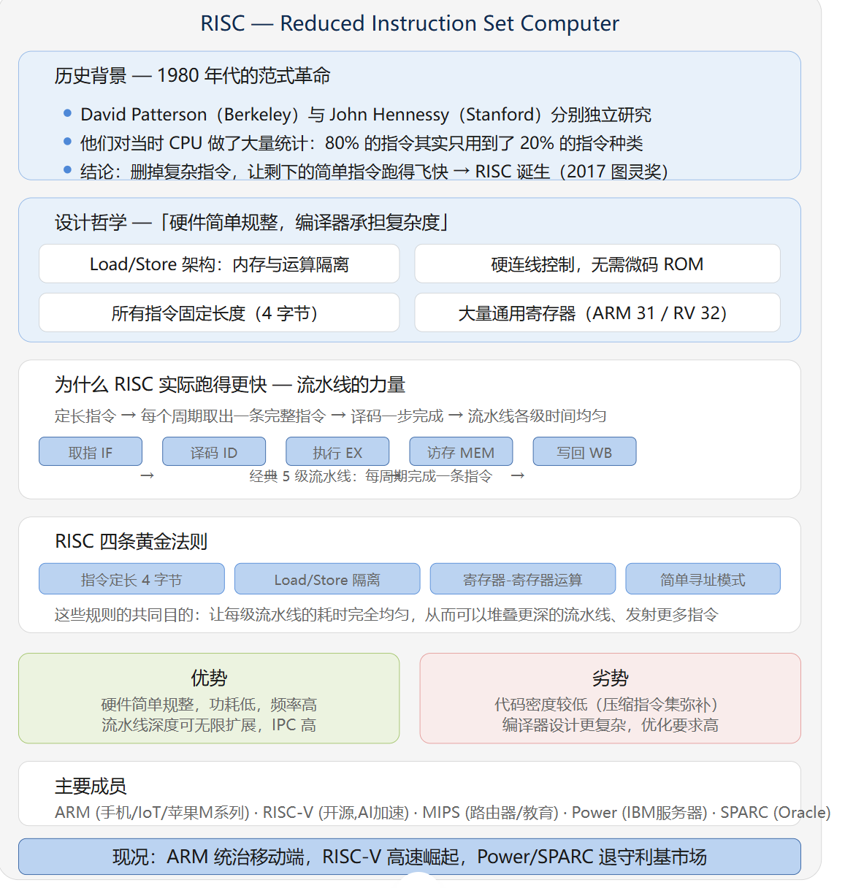
◦流水线、多核架构更容易优化，同工艺性能更强；
◦低功耗优势巨大，适合移动、嵌入式设备；
◦主频更容易拉高。
❌ 缺点
◦复杂任务需要多条指令组合，程序代码更长，占用更多内存；
◦编译器负担更重，需要优化指令调度；
◦早期生态、软件兼容性不如成熟 CISC。双
2.3.3 CISC 和 RISC对比
2.4 CPU执行指令流程
2.5 中断机制
2.6 内存层级介绍（寄存器→Cache→RAM→磁盘）
2.7 地址映射
3. 操作系统
3.1 OS管理
3.1.1 进程和线程管理
3.1.2 内存管理
3.1.3 文件系统
3.1.4 IO设备管理
3.2 并发和同步
3.2.1 并发机制
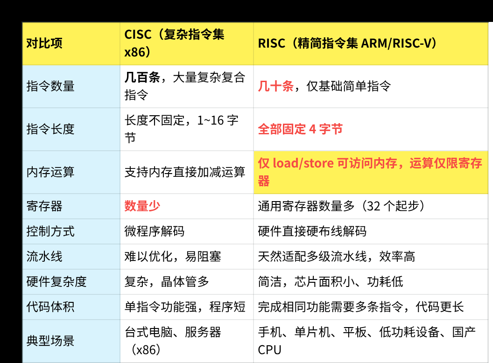
互斥互锁
死锁
3.2.2 同步机制
4. 启动流程
4.1 计算机启动流程
•